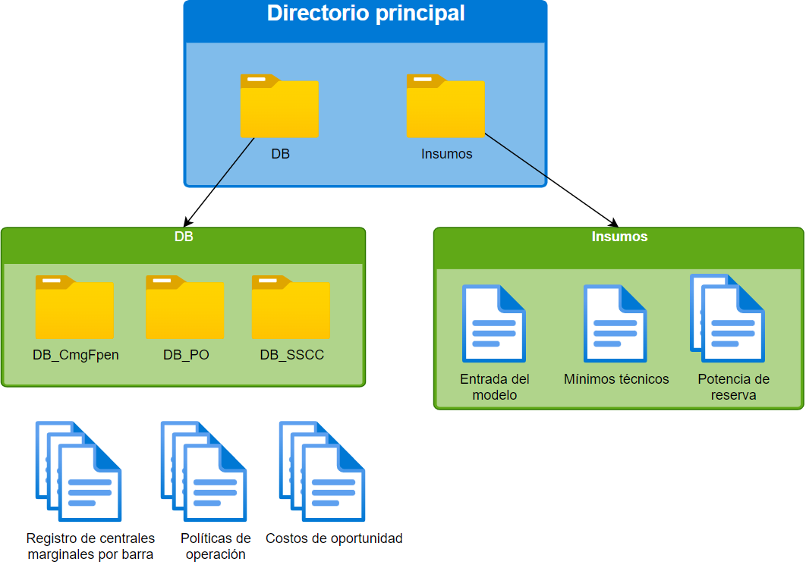

General
Estructura general del directorio
El directorio requerido para que el programa pueda encontrar correctamente los datos de entrada es mostrado a continuación:
Si los directorios no existen, el programa los creará automáticamente y notificará al usuario.
Carpeta de insumos
La carpeta de insumos está compuesta por una serie de archivos que son utilizados por el programa:
Entrada del modelo.xlsx
Mínimos técnicos.xlsx
- Archivos de potencia de reserva
Poseen un formato definido: Potencia_Reserva_<año+mes>.xlsx y corresponden al archivo de potencia de reserva con desglose.
Carpeta de DB
La carpeta de DB contiene los archivos que tienen información horaria sobre los costos y valores de operación de las diferentes centrales.
- Carpeta DB_CmgFpen
La carpeta contiene los registros de centrales marginales por barra para un periodo mensual determinado.
- Carpeta DB_PO
La carpeta contiene los archivos correspondientes a las políticas de operación diarias.
- Carpeta DB_CmgFpen
La carpeta contiene los detalles de costo de oportunidad diarios.